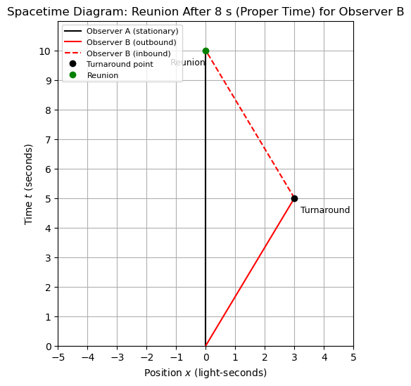

A3.8 Time Dilation: A Geometric Perspective#
A3.8.1 Introduction#
In special relativity, time dilation refers to the phenomenon where a moving clock ticks more slowly than one at rest — as observed from another frame.
Mathematically, if a clock is moving at speed \(v\) relative to an observer, then the time interval \(\Delta t'\) recorded by the moving clock appears shorter than the time interval \(\Delta t\) recorded in the stationary frame:
But where does this come from geometrically?
We’ll use spacetime diagrams to visualize time dilation by comparing elapsed time along different worldlines.
A3.8.2 Example: Time Dilation Illustrated in a Spacetime Diagram#
Let us now illustrate time dilation with a concrete example.
Scenario#
Two identical clocks start at the same location and time in the stationary frame:
Clock A remains at rest in the stationary frame.
Clock B moves at a constant speed \(v = 0.6c\) along the \(x\)-axis.
Both clocks are synchronized at departure (\(t = 0\), \(x = 0\)).
After 4 seconds of proper time as measured by the moving clock, Clock B turns around and returns to the position of Clock A. We will compare how much time has passed on each clock by examining their worldlines in a spacetime diagram.
This setup mimics a simplified “twin paradox” scenario, where the moving twin (Clock B) experiences less elapsed time.
Step 1: Plotting the Worldlines and Proper Time
🐍 Jupyter Code Cell

Interpretation#
In this diagram:
The blue worldline shows the stationary clock (Clock A).
The red worldline shows the moving clock (Clock B), which moves at \(v = 0.6c\) and then reunites with A after 8 seconds of its own proper time.
Interpretation and Time Comparison#
The stationary observer A measures a total elapsed time of:
\[ t_A = 2 \times \gamma \tau = 2 \times 1.25 \times 4 = 10 \, \text{s} \]The moving observer B experiences:
\[ \tau_B = 2 \times 4 = 8 \, \text{s} \]
So when the observers reunite, B’s clock shows only 8 seconds have passed, while A’s shows 10 seconds. This is a clear example of differential aging.
Why This Happens (Geometrically)#
In the spacetime diagram, the stationary observer’s worldline is vertical.
The moving observer’s worldline is a “V” shape, with the turnaround point marking a sharp change in direction.
Proper time (the time measured on a clock traveling along a worldline) is shorter for curved paths through spacetime.
This is a geometric consequence of special relativity:
The longer the spatial displacement in spacetime (especially with sharp turns), the less proper time accumulates along that path.
That’s why B, who changes direction and moves through space, experiences less proper time — even though both clocks are ideal and working correctly.
Important Note: Proper Time Is Not Euclidean Length
The length of the red line in the diagram does not represent the amount of time experienced by the moving clock.
In special relativity, proper time is calculated using the Minkowski interval:
\[ \tau = \sqrt{(\Delta t)^2 - (\Delta x)^2} \]So even though the red worldline might look longer than the blue one, it corresponds to less elapsed time. This is because spacetime diagrams are plotted using Euclidean graphics, while spacetime itself is not Euclidean.
The visual length of a worldline can be misleading — always compute proper time using spacetime intervals.